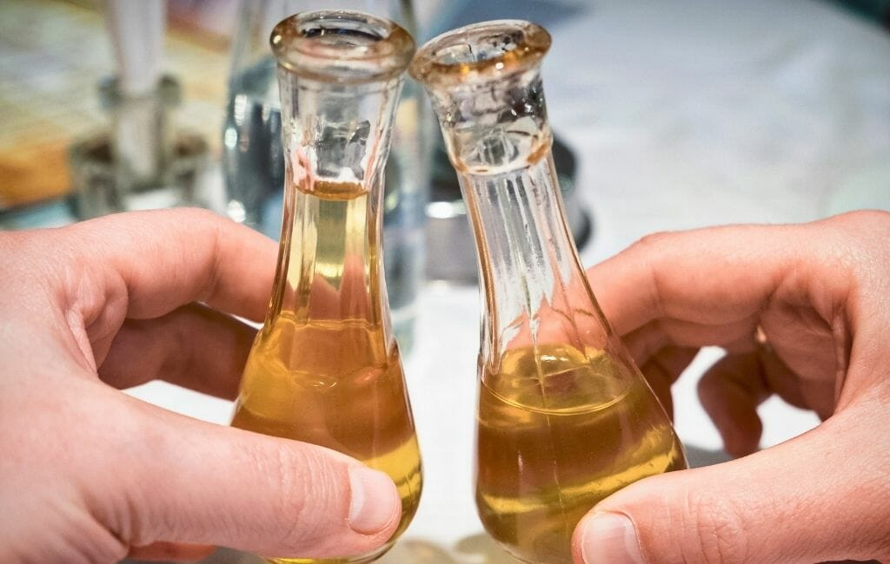
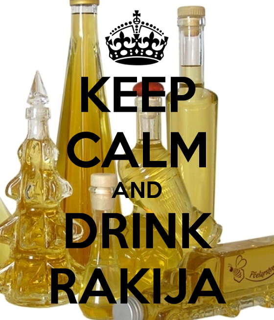

Ракията като част от националната идентичност
Варенето на ракия и пиенето ѝ е традиционно занимание на българина. Самата ракия е влязла във фолклора и обичаите. „Руйно вино“ и „върла ракия“ са традиционните питиета. Тя се пие изстудена през лятото, със стайна температура, или „греяна“ през зимата. Когато бесарабските българи в Молдова разбират през 1858 година, че за княз на Молдова е назначен българинът Никола Богориди, първата молба, която отправят към него, е да свали държавния монопол върху ракията. За и около ракията си има традиционна терминология, част от която беше описна по-горе. Произнася се и като „рикия“. Също се среща и като „ичкия“, „пукница“ или „скоросмъртница.“ Има три разновидности при варенето на ракия, те са следните: Първак – първата потекла ракия при дестилирането – с много висок градус. Цуйка – слаба ракия, обикновено двойно препечена Пърцуца или „шльокавица“ – последната слаба ракия, която тече от казана. Обикновено се събира и се пуска при материала за следващото варене на ракия. Ракията се пие преди ядене, като аперитив.